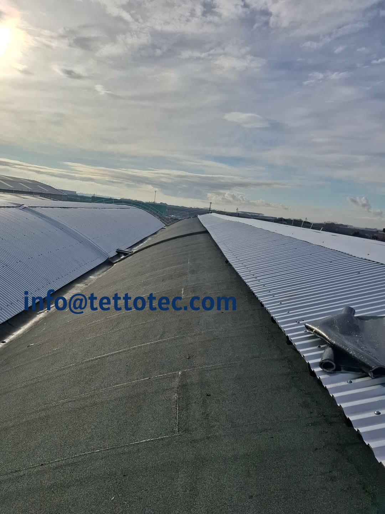
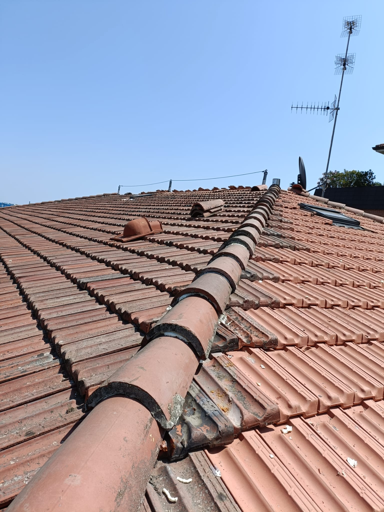

Analisi della copertura
Valutazione di manto, supporto, impermeabilizzazione, linee di gronda, colmi e punti di raccordo.
Servizi tecnici • Coperture • Impermeabilizzazioni
La corretta esecuzione di un intervento su tetto richiede analisi tecnica, scelta coerente dei materiali e attenzione ai dettagli costruttivi. TettoTec sviluppa interventi mirati o completi in base allo stato della copertura, al contesto edilizio e alla funzione dell’edificio.

Approccio operativo
Non esiste un unico intervento valido per tutti i tetti. La soluzione cambia in base a pendenza, stratigrafia esistente, sistema di smaltimento delle acque, condizioni dei raccordi e livello di degrado. Per questo analizziamo il problema prima di intervenire, così da impostare un lavoro corretto dal punto di vista tecnico e durevole nel tempo.
Valutazione di manto, supporto, impermeabilizzazione, linee di gronda, colmi e punti di raccordo.
Definizione della soluzione più adatta in base al tipo di tetto e alle criticità riscontrate.
Intervento realizzato con attenzione ai dettagli costruttivi e alla corretta gestione dell’acqua.
Servizi principali
Operiamo sia su coperture esistenti che su rifacimenti completi, con interventi calibrati sul reale stato di conservazione del sistema di copertura.
Intervento indicato quando la copertura ha perso affidabilità generale, presenta infiltrazioni ricorrenti o richiede il rifacimento del pacchetto tetto.
Soluzioni mirate per guasti circoscritti, deterioramenti puntuali, infiltrazioni localizzate e ripristino di elementi danneggiati.
Interventi su tetti piani, superfici tecniche e aree sensibili dove la continuità del sistema impermeabile è fondamentale per la tenuta.
Lavorazioni su converse, scossaline, canali di gronda, pluviali e dettagli di raccordo nei punti soggetti a maggiore vulnerabilità.
Interventi su sistemi a tegole, coppi o elementi modulari, con verifica di ventilazione, supporti e linee di colmo.
Valutazione preliminare utile a definire priorità, impostazione dell’intervento e coerenza tra problema riscontrato e soluzione proposta.
Rifacimento e ripristino
La distinzione tra riparazione e rifacimento completo è centrale. In alcuni casi è sufficiente intervenire su un punto critico; in altri, il degrado riguarda l’intero sistema e richiede un’impostazione più strutturata.
Un rifacimento completo può prevedere rimozione del manto, verifica del supporto, ripristino degli strati funzionali, inserimento di isolamento e nuova impermeabilizzazione. Una riparazione localizzata, invece, si concentra sul singolo punto di criticità, purché il resto della copertura conservi ancora affidabilità.
Impermeabilizzazione
Una buona impermeabilizzazione non dipende unicamente dal prodotto scelto, ma dalla corretta progettazione dell’insieme: supporto, continuità, sovrapposizioni, pendenze, raccordi e scarico delle acque.
Richiedono particolare attenzione a pendenze, ristagni e continuità del sistema impermeabile.
Comignoli, lucernari, attacchi a parete e scarichi richiedono dettagli esecutivi precisi.
La resistenza nel tempo dipende dalla posa corretta, non solo dal materiale utilizzato.
Sistemi di copertura
Le coperture si distinguono principalmente in sistemi continui e sistemi discontinui. Comprendere questa differenza è fondamentale per scegliere l’intervento corretto.
Le coperture continue sono sistemi in cui la protezione all’acqua è affidata a uno strato uniforme, generalmente costituito da membrane impermeabili applicate in continuità. Sono frequenti su tetti piani, superfici industriali, terrazze tecniche e coperture a bassa pendenza.
Il loro vantaggio principale è la continuità del sistema: riducono i punti di passaggio tra elementi e permettono di realizzare superfici protette in modo omogeneo. Tuttavia, richiedono una posa precisa, soprattutto in corrispondenza di scarichi, risvolti e dettagli di raccordo.
Le coperture discontinue sono invece composte da elementi modulari sovrapposti, come tegole, coppi, pannelli o lastre. La protezione dall’acqua deriva dalla corretta sovrapposizione degli elementi e dalla gestione dei dettagli costruttivi.
Sono tipiche dell’edilizia civile e richiedono attenzione particolare a ventilazione, linee di colmo, attacchi a parete, comignoli, lucernari e smaltimento delle acque. La qualità dell’intervento dipende molto dalla precisione nei dettagli e dallo stato del supporto sottostante.
Dettagli costruttivi
Molti problemi di copertura non nascono dalla superficie principale, ma dai dettagli esecutivi: attacchi a parete, converse, scossaline, compluvi, colmi, linee di gronda e corpi emergenti.
Richiedono raccordi eseguiti correttamente per evitare infiltrazioni nei punti di passaggio.
Devono assicurare continuità e protezione nei cambi di piano e nelle connessioni con le pareti.
La corretta evacuazione delle acque è fondamentale per evitare ristagni e sovraccarichi.
Risultati
La documentazione fotografica dei lavori realizzati aiuta a comprendere il livello di cura, la qualità delle finiture e l’attenzione posta nei dettagli costruttivi.


Valutazione tecnica
Ogni copertura ha esigenze specifiche. Una valutazione preliminare ben fatta consente di evitare interventi impropri e impostare una soluzione efficace e durevole.
Compila il modulo di richiesta preventivo e descrivi il problema della tua copertura.
Vai al preventivo